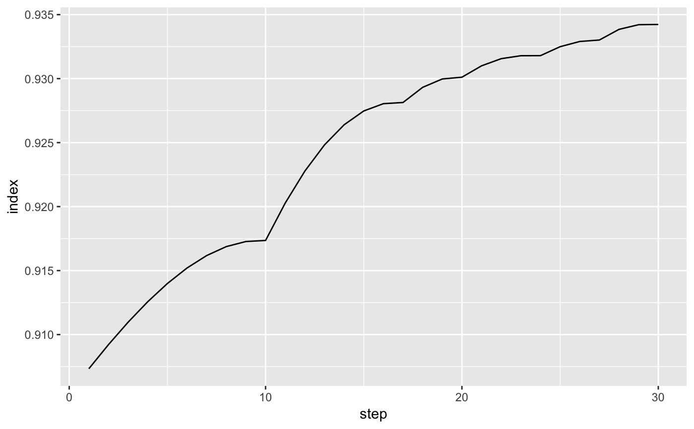

Compute index values for a tour history.
path_index(history, index_f, data = attr(history, "data"))
Arguments
| history | list of bases produced by |
|---|---|
| index_f | index function to apply to each basis |
| data | dataset to be projected on to bases |
See also
save_history for options to save history
Examples
#> Value 0.900 1.5% better (0.281 away) - NEW BASIS #> Value 0.907 2.3% better (0.400 away) - NEW BASIS #> Value 0.917 1.1% better (0.311 away) - NEW BASIS #> Value 0.928 1.2% better (0.234 away) - NEW BASIS #> Value 0.930 0.2% better (0.096 away) - NEW BASIS #> Value 0.931 0.1% better (0.062 away) #> Value 0.932 0.2% better (0.113 away) - NEW BASIS #> Value 0.932 0.1% better (0.048 away) #> Value 0.933 0.1% better (0.058 away) #> Value 0.933 0.1% better (0.069 away) #> Value 0.933 0.1% better (0.058 away) #> Value 0.932 0.1% better (0.067 away) #> Value 0.932 0.1% better (0.046 away) #> Value 0.932 0.0% better (0.035 away) #> Value 0.932 0.0% better (0.030 away) #> Value 0.933 0.1% better (0.063 away) #> Value 0.932 0.0% better (0.046 away) #> Value 0.933 0.1% better (0.101 away) - NEW BASIS #> Value 0.934 0.1% better (0.081 away) - NEW BASIS #> Value 0.934 0.0% better (0.028 away) #> Value 0.935 0.0% better (0.043 away) #> Value 0.934 0.0% better (0.033 away) #> Value 0.934 0.0% better (0.026 away) #> Value 0.935 0.0% better (0.038 away) #> Value 0.935 0.0% better (0.042 away) #> Value 0.935 0.1% better (0.050 away) #> Value 0.934 0.0% better (0.033 away) #> Value 0.935 0.0% better (0.047 away) #> Value 0.934 0.0% better (0.029 away) #> Value 0.935 0.0% better (0.035 away) #> Value 0.935 0.1% better (0.052 away) #> Value 0.935 0.1% better (0.057 away) #> Value 0.935 0.0% better (0.036 away) #> Value 0.934 0.0% better (0.024 away) #> Value 0.935 0.1% better (0.067 away) #> Value 0.935 0.0% better (0.047 away) #> Value 0.935 0.0% better (0.037 away) #> Value 0.935 0.1% better (0.080 away) #> Value 0.934 0.0% better (0.028 away) #> Value 0.935 0.0% better (0.049 away) #> Value 0.934 0.0% better (0.029 away) #> Value 0.934 0.0% better (0.027 away) #> Value 0.934 0.0% better (0.018 away) #> No better bases found after 25 tries. Giving up. #> Final projection: #> 0.947 -0.113 #> 0.016 0.860 #> 0.230 0.397 #> -0.131 -0.234 #> -0.033 -0.076 #> 0.178 -0.173#> [1] 0.9073309 0.9173536 0.9281355 0.9301127 0.9317970 0.9330178 0.9342341 #> [8] 0.9342341 #> attr(,"class") #> [1] "path_index"#> [1] 0.09266913 0.08264643 0.07186452 0.06988731 0.06820298 0.06698223 0.06576588 #> [8] 0.06576588 #> attr(,"class") #> [1] "path_index"# Use interpolate to show all intermediate bases as well hi <- path_index(interpolate(fl_holes), holes()) hi#> [1] 0.9073309 0.9092152 0.9109687 0.9125691 0.9139902 0.9152025 0.9161746 #> [8] 0.9168746 0.9172715 0.9173536 0.9202756 0.9227737 0.9248209 0.9263939 #> [15] 0.9274733 0.9280432 0.9281355 0.9293199 0.9299743 0.9301127 0.9310016 #> [22] 0.9315607 0.9317904 0.9317970 0.9324953 0.9329033 0.9330178 0.9338500 #> [29] 0.9342152 0.9342341 #> attr(,"class") #> [1] "path_index"plot(hi)